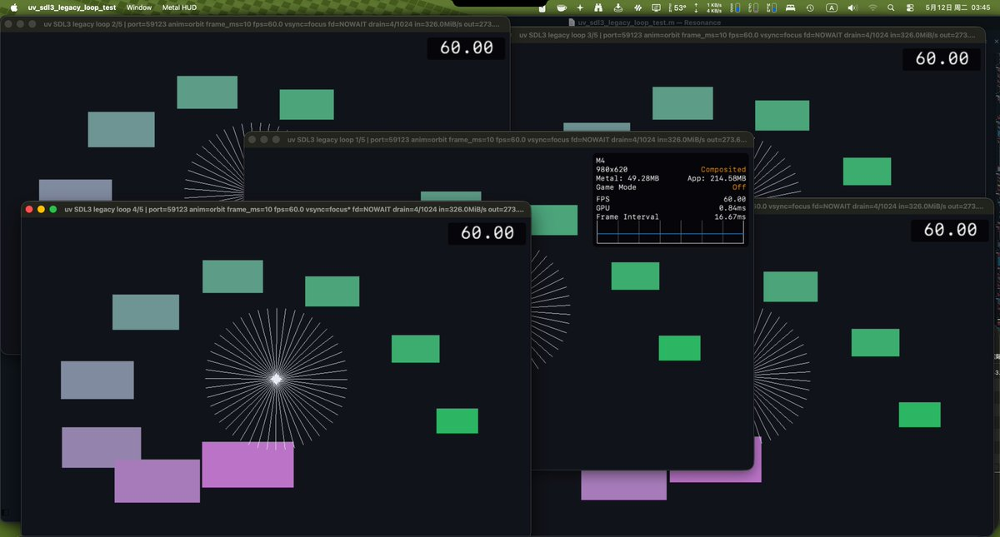

期待着的笨蛋
@appleneko2001
我觉得 不会写软件又白拿钱的人确实是大部分有些自大…
咱有自知之明 知道自己的能力不足 但选择自己沉入在代码的沙盒内疯狂做实验 让自己学会怎么写好的代码…光研究还不够 大部分情况下咱也会偷学或明文参考附引用其他人的代码…前提是有许可的状况下（如果复制到不该碰的代码后面是会有法律麻烦的）

Reimu NotMoe @ 🦋 | 🖥️🛠️⚙️☕️🏙️🖖🖤🤍💜
@ReimuNotMoe
这种不长脑子的傻逼也就只会用一句skill issue来喷人了，狗嘴里吐不出象牙来
我作为一个没有写过任何原生苹果软件的人也就花了两天时间琢磨你们这破烂系统的脑残窗口管理。现在已经被我成功征服。一个线程同时画5个窗口+开HTTP服务。对窗口的任何操作都不会导致TCP流中断。究竟谁有 skill issue？xswl https://t.co/pxgi5l24vX https://t.co/jrUXtWfXPq